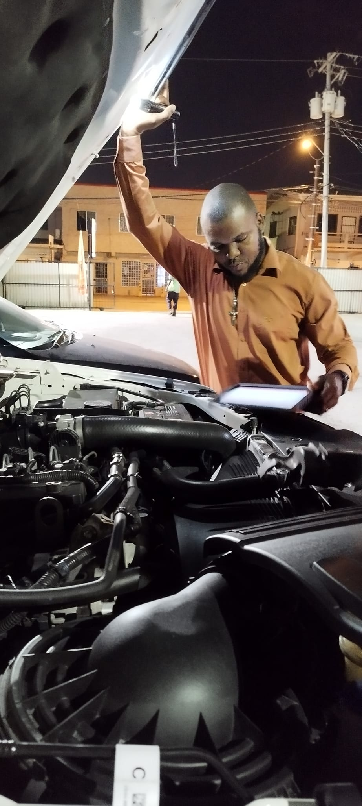

Automotive Diagnostics
Electrical and electronic fault diagnosis, system testing and technology-driven troubleshooting.
Explore automotive & EV services →Welcome to Qubtic Technologies. Explore automotive electrical and electronic diagnostics, hybrid and electric vehicle services, drone technology, robotics and hands-on technical education in The Bahamas.
Future Engineers AcademyHybrid & EV Services

Electrical and electronic fault diagnosis, system testing and technology-driven troubleshooting.
Explore automotive & EV services →
Hands-on learning in unmanned aircraft, electronics, software and engineering applications.
Explore education →Robotics, programming, Linux, AI, Raspberry Pi, ESP32 and creative engineering for ages 7–18.
Visit the academy →Explore hybrid and EV diagnostics, servicing, battery health assessment and technical training, with safety-led procedures and an emphasis on modern vehicle systems.
View Hybrid & EV SectionBased in Nassau, The Bahamas. For training, enquiries and service information, contact 242-468-4005 or 242-468-0472.